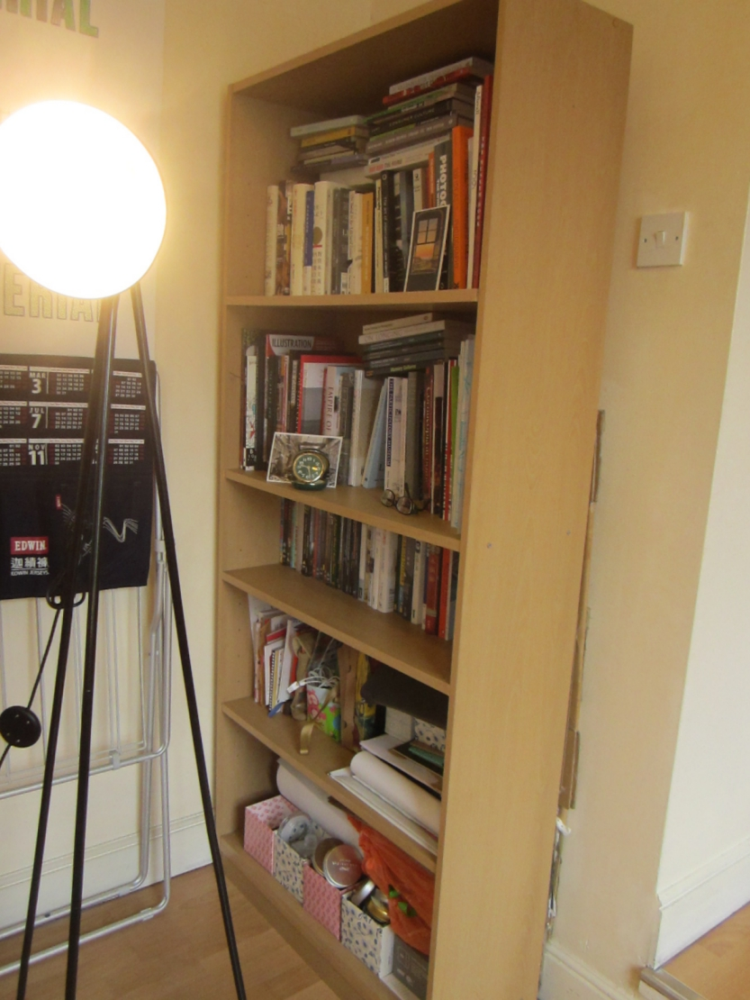
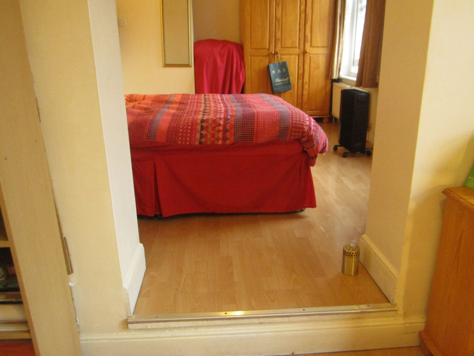
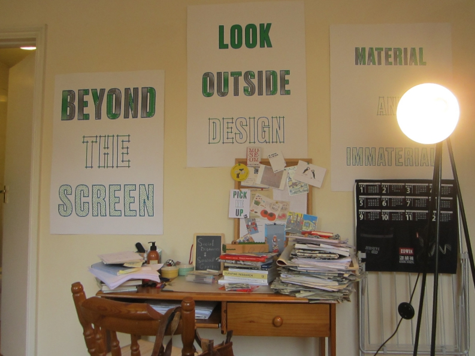

C's living room of the home I visited also served as her personal library (See this post for her spatial plans for book collection). Since she did not acquire additional furniture when she moved in, the tall and short bookshelves must have been used by the previous occupant of the flat as well. There is ample historical evidence that the library in the house was used as the living room from the 16th to the 19th century.

According to Wainwright (1991)1, the library in the house was never just a room with shelves of books, but curiosities the host had collected from all over the world were also displayed there. Bibliophiles who took pains organizing books, artistic pieces, and various curiosities in the library naturally spent a great deal of time there, so it became the de facto living room (p. 15-16).
The Library as a Place Where Guests Congregate
Wainwright (1991)1 explains the increasing importance of the library in a house for social purposes. Country house parties became popular with the construction of the railway, and guests to these parties needed a place to entertain themselves during idle hours under adverse weather conditions.
In my fieldsite, C disclosed in an interview that a friend once came to stay with her for a month in mid-2015. Her friend usually sat in the space between the bedroom and the library-cum-living room. The affordance (Gibson, 1977)2 of the step between the bedroom and the living room may have invited the guest to sit there, but it was also possible that she considered the library a more appropriate place to stay in during the day.

I also stayed in the library-cum-living room when I conducted interviews and ethnography. Apart from books, C adorned the walls with visually striking posters. She explained that the messages from the posters inspired her in her own studies, but their presence in the room captured my attention and elicited reactions from me, as I imagined the curiosities in private libraries in the past would have to the house guests.

Reading as a Solitary Activity or a Group Activity
Historically, the library was also used as the living room for families. Communal reading was a common activity among English families in the 19th century. For instance, in the diaries kept by Emily Shore (1819–1839), she described how her perception of verses and texts were heavily influenced by her father's and cousins' readings and interpretations (Colclough, 2011)3. The image of reading as an activity among family members or groups of people is preserved in the present age. To provide an example, in studies envisioning domestic library systems, family usage is always taken into consideration (Jeyaverasingam & Yang, 2008; Wu, et al., 2009)45.
Scholarly reading, in contrast, are traditionally seen as a solitary activity. Cook (2011)6 gives a detailed account of how Victorian scholars consecrated their libraries, where the book collections represented their essential selves. These scholarly libraries operated by exclusion of everyone else so that the scholar could engage in their own intellectual pilgrimage. However, Foucault (1986)7 theorized the library as an amalgamation of materials gathered from all places and all times. Not only can the materials be processed in contexts out of their origins but they also resembled the messiness of our everyday living experience. Following this line of thought, people are never truly alone even when they are reading by themselves. With a piece of text in hand, readers are transferred to a different place in time, taking in the messages transmitted by the text.
I will explain in detail how technological devices facilitate this transition among different places in C's reading practices. Here I will only mention how she read in her library and her attempts to create space in which she did not feel alone despite reading by herself.
Alone, Together
There were large windows in her living room where ambient noises from the street could vaguely be heard. C explicitly said that the noises were comforting to her as they created an atmosphere which was similar to that of a café.

She expressed her preference of reading in cafés during an interview.
Researcher: There are noises in cafés. Wouldn't you think they are disturbing?
C: I just need some ambient noises. I feel more comfortable with people around me.
Nevertheless, she did not think reading together with a friend creates a better reading experience since it hindered her productivity.
Researcher: Do you often read by yourself? Or do you find someone else to read with you?
C: I only look for someone when I need help with statistics. Otherwise I don't usually read with others. I tried to find a friend to work together before when there were close deadlines, and I couldn't calm down or concentrate. My friend was a journalist with deadlines. We were both anxious, so we met once or twice.
Researcher: Did you meet in cafés?
C: Yes, but I didn't think it was very helpful. Originally I thought we could get some emotional support from each other, but we ended up chatting during our meetings. I felt so guilty after that.
The ideal environment for C, then, was somewhere in which she could be alone and also together with other people. She made sure that her library at home bore this spatial feature. Learned people in the past also constructed their library in a way that it juxtaposed the public and private. For instance, in Sir Walter Scott's writing, he noted that the library in his house was right next to the drawing room so that it could accommodate guests when needed (Wainwright, 1991). When he desired a place to study alone, he could close the door between these two rooms for quietude.
The Ideal Studying Place for a Scholar
Despite her penchant for reading at cafés, C considered her library the ideal place where she could do serious writing.
C: I spent more time at home before November since I had a manuscript deadline.
Researcher: Don't you have essay deadlines now?
C: Yes, but there is still plenty of time. The schedule for that manuscript was tight because it had to be done within a month, no actually within three weeks since I had to deliver early. Now... I don't need to deliver writings of a serious nature, so I don't have to stay home all the time where all the books I need are beside me.
As an aspiring scholar, C's vision of the ideal studying place had historical precedence. It needs to allow for both public and private usage, and materials needed should be at disposal.
Wainwright, C. (1991). The library as living room. In R. Myers & M. Harris (Eds.), Property of a gentleman: The formation, organisation and dispersal of the private library 1620-1920 (pp. 15-24). New Castle: Oak Knoll Press. ↩
Gibson, J. J. (1977). The theory of affordances. In R. Shaw & J. Bransford. (Eds.), Perceiving, acting, and knowing: Toward an ecological psychology (pp. 67-82). Hillsdale, NJ: Erlbaum. ↩
Colclough, S. (2011). Representing reading spaces. In R. Crone & S. Towheed (Eds.), The history of reading, volume 3: Methods, strategies, tactics (pp. 99-114). Basingstoke: Palgrave Macmillan. ↩
Jeyaverasingam, S., & Yan, Y. (2008). A Mash Up Home Library Management System. In Services-Part I, 2008. IEEE Congress on Services (pp. 160-167). IEEE. ↩
Wu, B., Song, S., Cao, J., & Ru, R. (2009). Virtual home library system——let every chinese family having their own libraries. Intelligent Information Management, 1(01), 54-59. ↩
Cook, D. (2011). Bodies of scholarship: Witnessing the library in late-victorian fiction. Victorian Literature and Culture, 39(01), 107-125. ↩
Foucault, M. (1986). Of Other Spaces. Trans. Jay Miskowiec. Diacritics, 16.1, 22-27. ↩